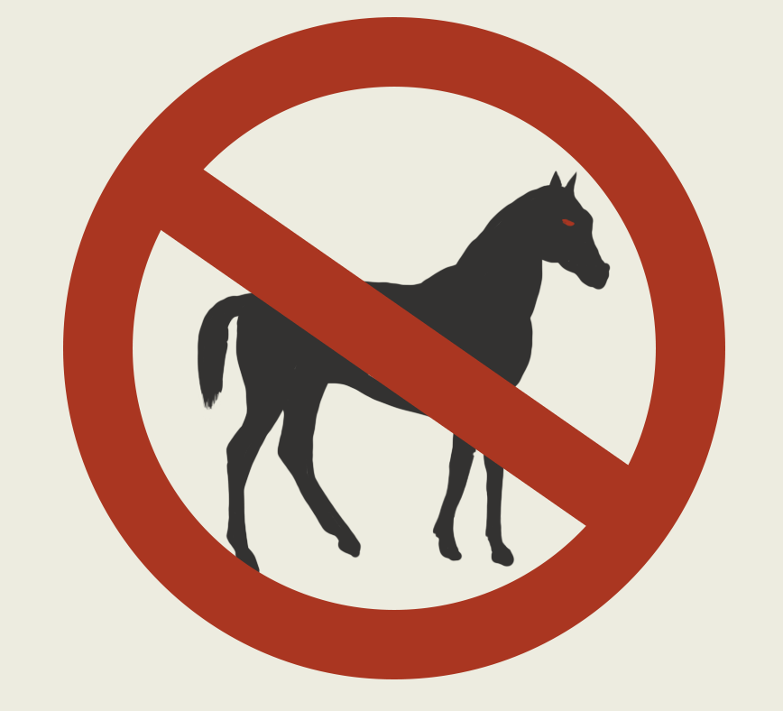
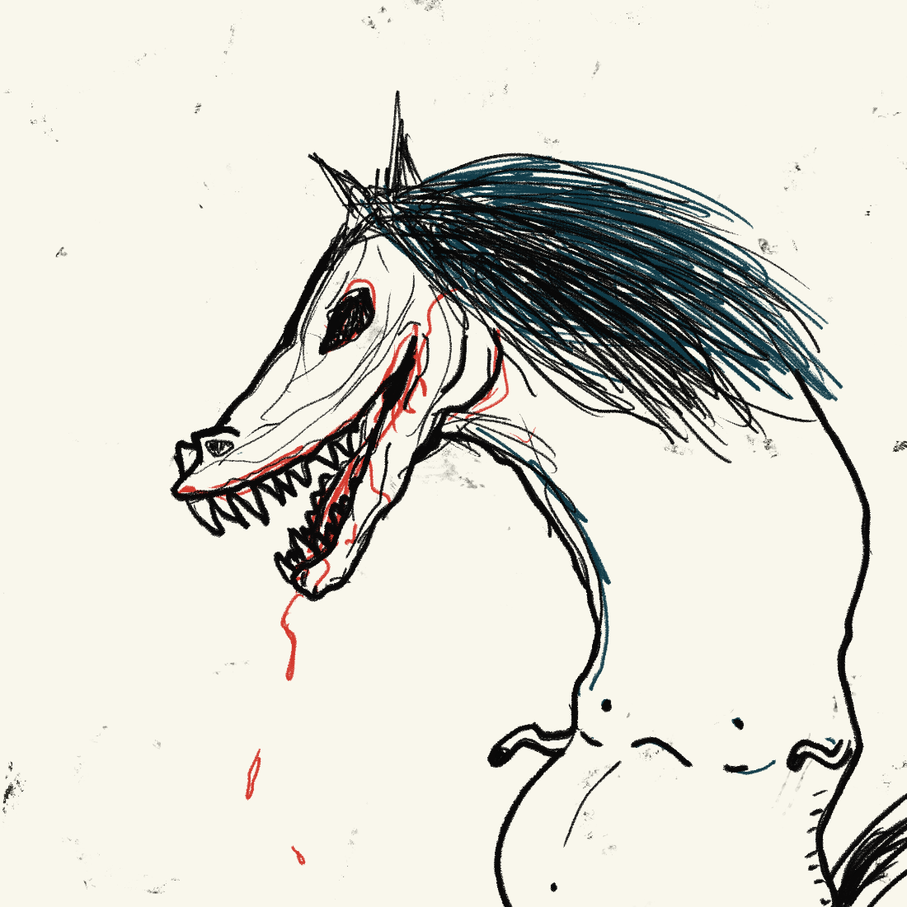
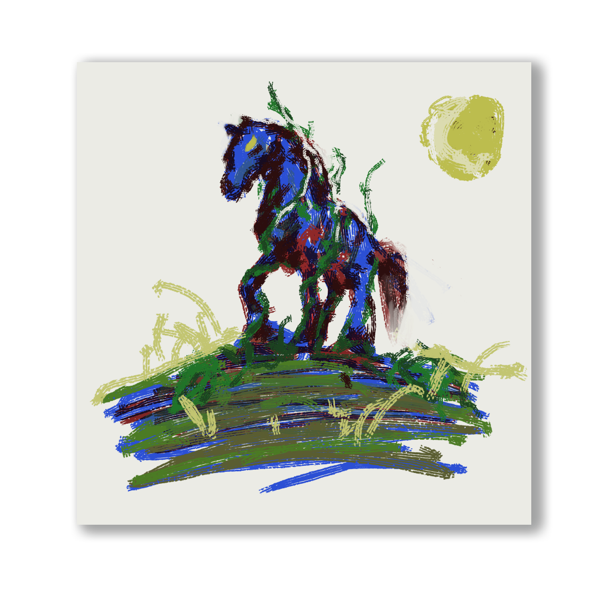
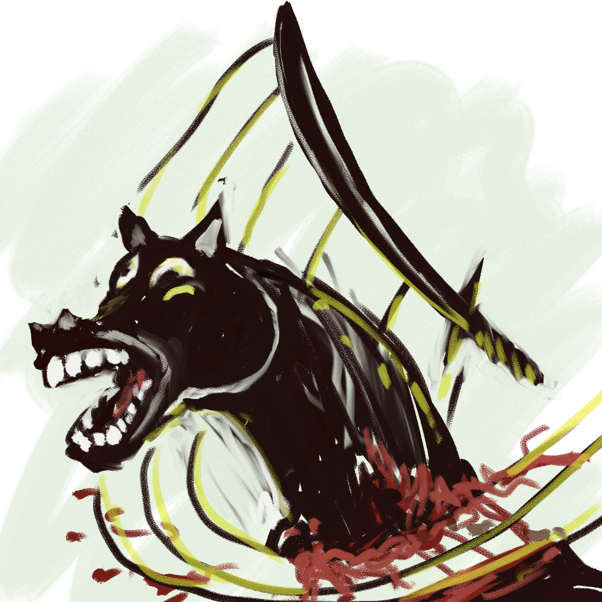
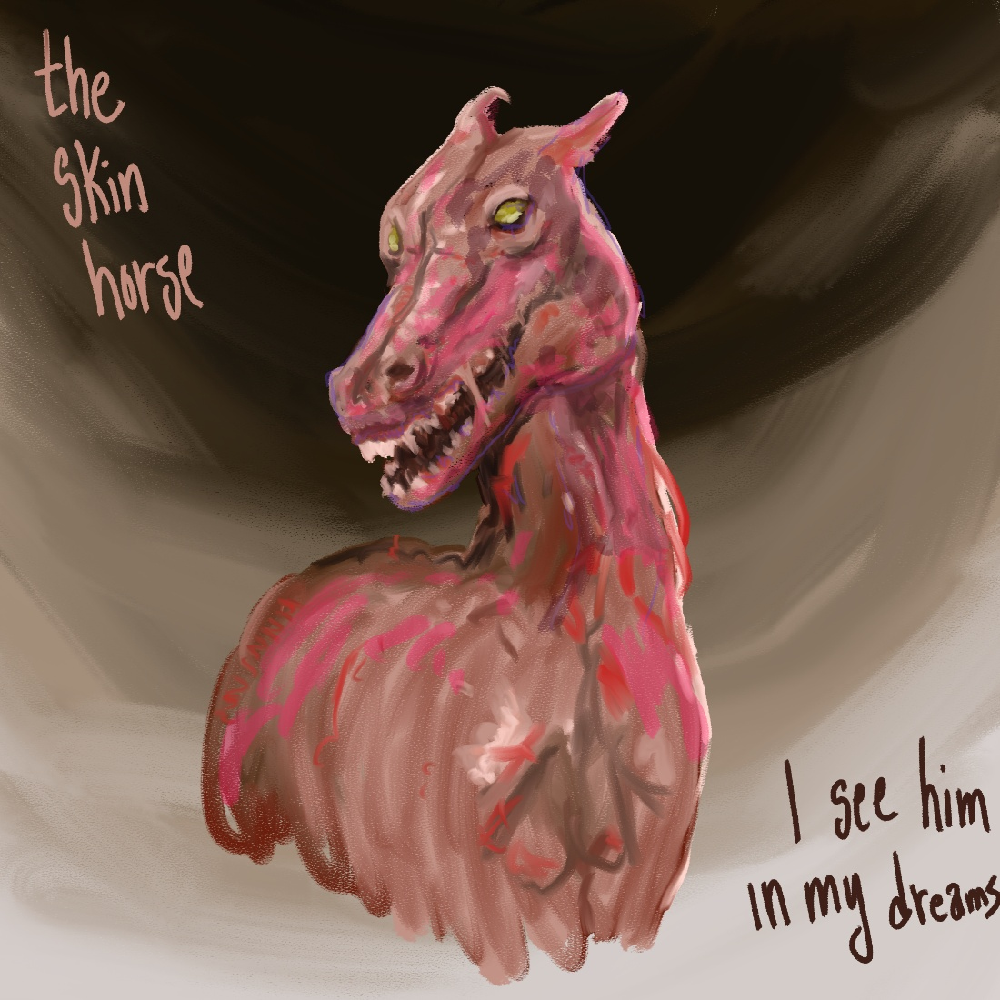
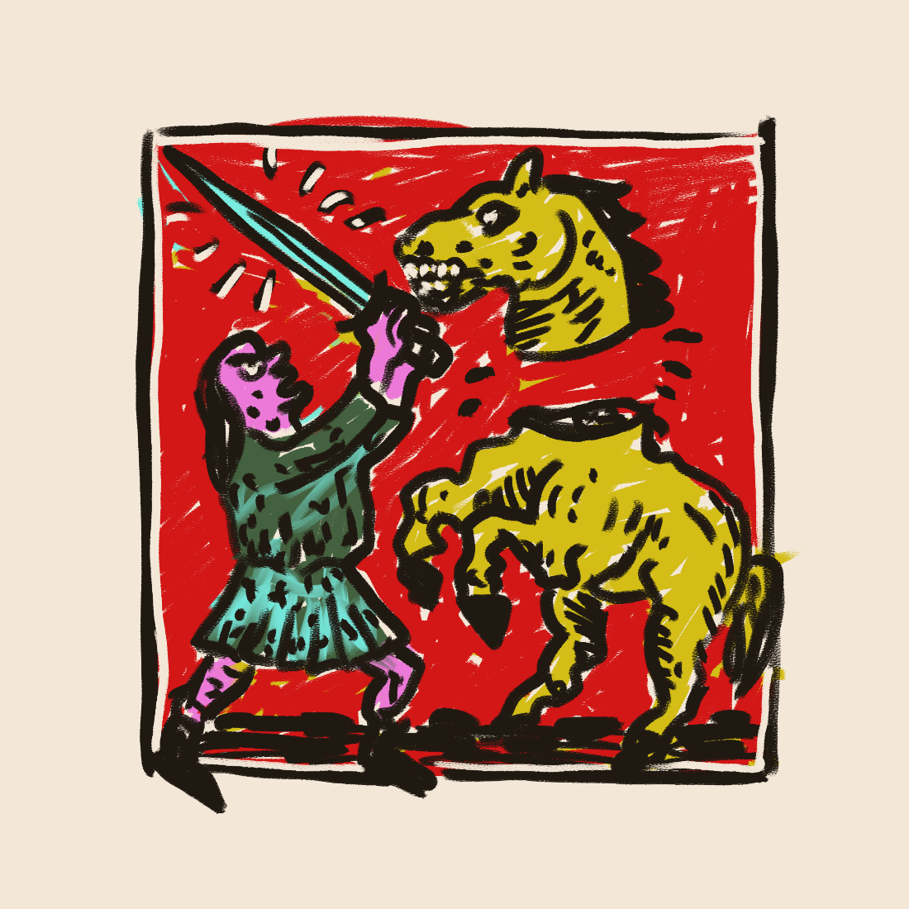

|
|
|
|
|
|
|
|
|
|
|

006000
since 1998


When I was a boy, I was bit by a horse when I tried to pet it. From that day, I have been the number one enemy of horses. I liked to draw horses in school getting mangled and smashed up.


In college, I formed a club for horse haters so that I would know who my allies were. Only a handful of people joined and many derided me for my efforts. I ran a small printing press, distributing literature about horses, illustrated and written by myself. There were other contributors and members, including the now-famous John Glomb, who went on to write a bestselling novel about a serial-killer horse.
During this time, I also initiated a horse fan club, so as to find out who my enemies were. It turns out, the horse club was a massive success and I was forced to shut it down.
When I graduated with my degree in illustration, I moved across the country, leaving the inaugural chapter of the horse haters club behind me.
I took a job with a small magazine as an illustrator in San Francisco, where I met Linda. She was a part-time subscription sales associate with a cute smile. We started dating soon after and eventually all I wanted to do was spend time with her. My horse illustrations began to slow down and eventually I stopped illustrating horses altogether. I sold many of my paintings to fellow horse haters. I hid my passion from Linda at first, but after a while I found that I didn’t even want to illustrate horses anymore. I just wanted to spend time with Linda. After only 8 months, Linda and I moved in together. We planned to marry, we even vacationed in Mexico twice. But it was the third trip where things went wrong.
Linda knew nothing of my hatred and fear of horses, and so she booked a surprise gift for me - horseback riding through the mountains.
I initially reacted poorly, having a strong aversion to the situation, but eventually I gave in. Linda and I rode horses that day and everything was fine. I thought, at that time, that I had seen the error of my ways. I thought that maybe I had just been overreacting my entire life. I wondered if I could live in peace now, knowing that I could easily ride a horse any time I wanted and I would be fine. My therapist thought the same thing. And so I let my guard down, which was my biggest mistake.
Linda and I continued to ride horses when we arrived home. We found a local stable and became dues-paying members. We both thought that the continued exposure would help me to relieve my horse anxiety permanently.
But then one day it happened - Linda fell from a horse and died.
By the time it happened, we had been riding together for nearly a year, and we had our regular horses at the stable - Cinnamon and Moyohi. Linda normally rode Cinnamon. But this day was different. Someone else had reserved both Cinnamon and Moyohi before we arrived, and so we were given two new horses - Glenn and Duke.
They were both strong horses, but Linda didn’t like how slow and sluggish Duke was being, and so we decided to switch. I did not care which horse I rode, which should tell you how lax I had become.
It was only once we were far away from the horse trainers that he horses began to buck. I could see a glance between them, then back at the stables before they acted. I was able to dislodge myself from the bucking horse’s back before it could launch me to the ground, but Linda was not so quick, and she did not realize the danger she was in.
He bucked one time and Linda went off the side and hit a rock. The paramedics said she died right away and did not feel anything, however they were shocked and surprised by the effects of the impact. They said that her injuries were consistent with someone falling from a building, not a horse’s back. It was only later that I learned of a horse technique of throwing a person from their back, psychically elongating the distance between their back and the ground, causing a person to fall through space as though they were falling from a very high place.

The man that owned the stable said Duke and Glenn had never done that before, like that was supposed to make me feel better. But I knew that it was an intentional attack. For years I had been a vocal advocate against horses. I had drawn and painted many depictions horses being smashed by pianos, thrown off bridges, and trampled under a giant’s heel. I had sold those paintings, and many prints of those paintings for over a decade. And we all know that horses have long memories.
They knew who I was, and it’s clear now that they used Linda to get to me. I had made myself a target and that’s why they tried to kill me and my fiancée.

My therapist thinks that concocting this elaborate story about psychic horses is a normal part of grief. He assures me that horses do not have the ability to plan revenge and collaborate for assassination attempts. I asked him, sir, how do you know? Have you ever asked a horse, which he said of course not.
That day, I fired him as my therapist because I realized that he was a horse sympathizer.
It was then that I called the old phone number for the Horse Haters Club, and John Glomb answered. He informed me of the growth of the organization in my absence. While the local inaugural chapter that I had created kept going without me, the movement had spread to many different campuses and even internationally.

It seems that many people across the world felt the same way that I did about horses, but did not have the confidence to say it to the world. My club gave them that voice.
He offered to step aside as president if I wanted to return, but I chose instead to come live and study on Dr. Brainwater’s compound. Here, we meditate on destroying horsekind, we eat fresh vegetables and mushroom soups, and we exercise our bodies for the upcoming war with the horses.
I no longer believe in harming the horses, as Dr. Brainwater has convinced me that outwardly hostile acts such as depicting them being crushed by heavy machinery and eaten alive by ants would only stir their anger against us. For now, we choose to defeat them in psychic meditational combat.
When the time is right, we may choose to revert to violent methods, but for now we must remain peaceful. For now we must warn our loved ones and continue to engage with the general public about the dangers of getting mixed up with horses.

Join me as we prepare for the Horse Wars.
|
Return to Reports List [ Return to Homepage ] |